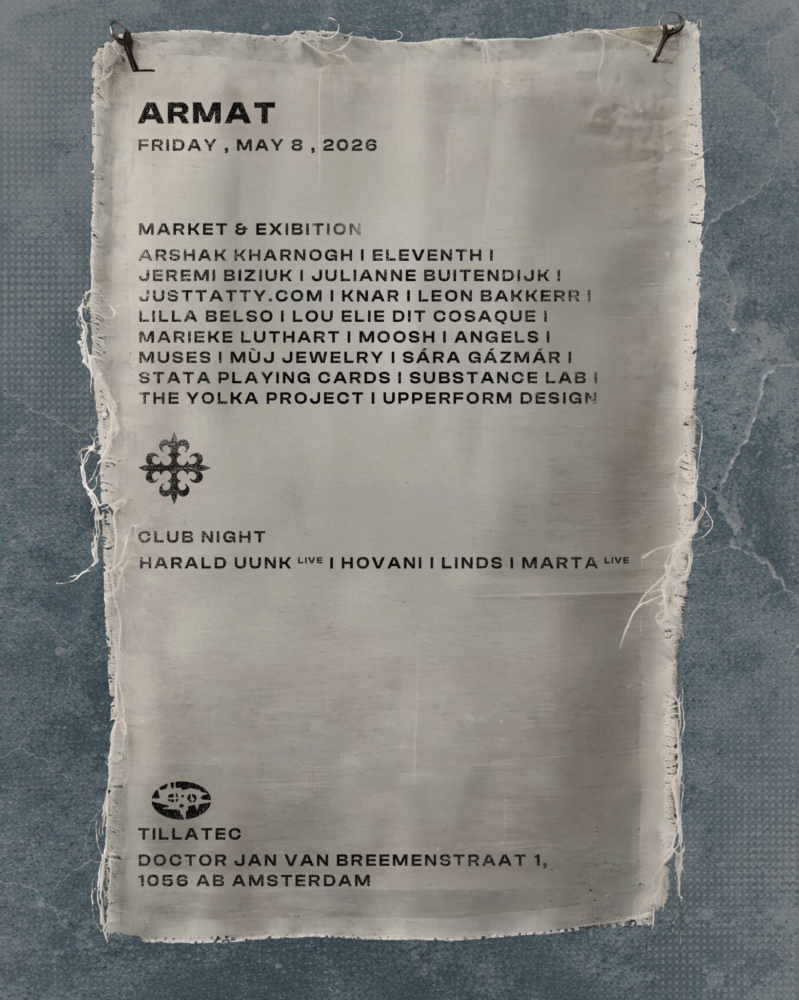
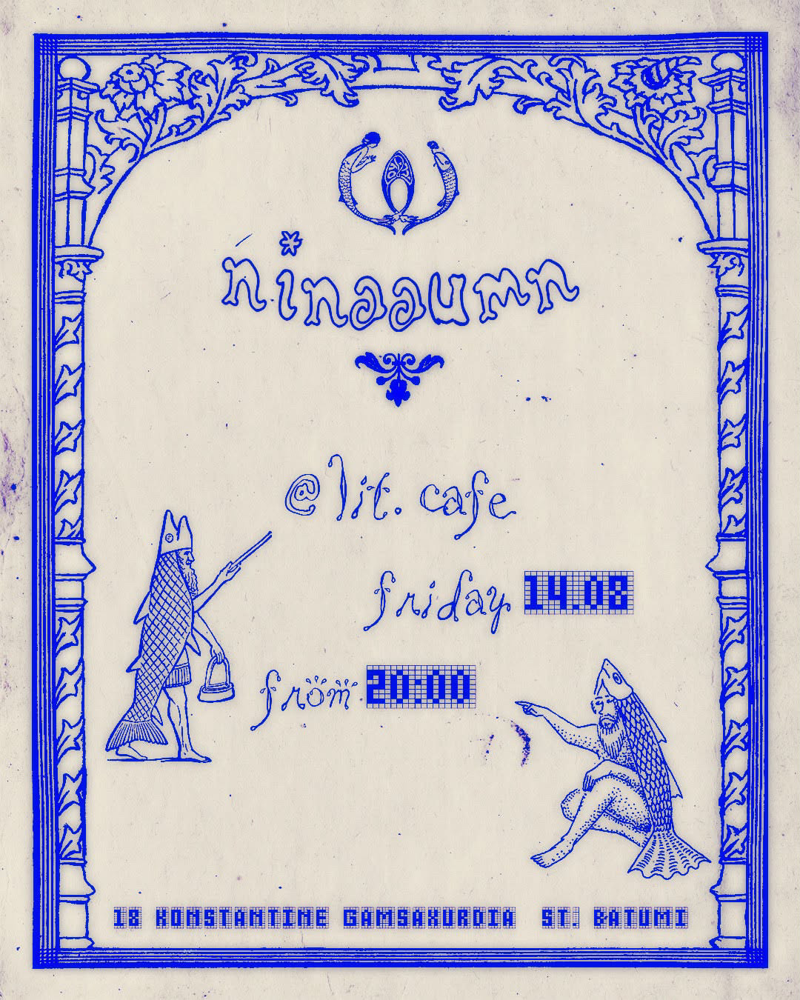
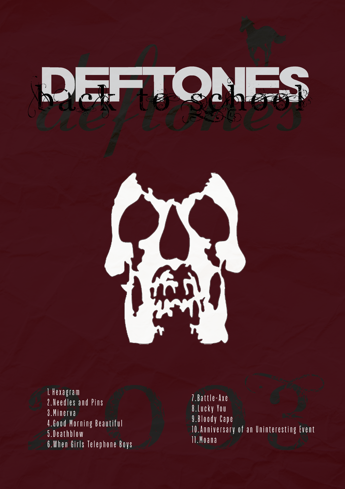
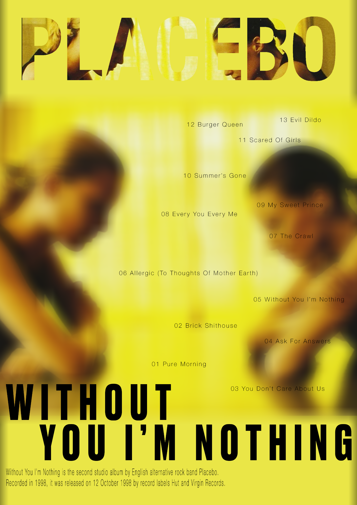
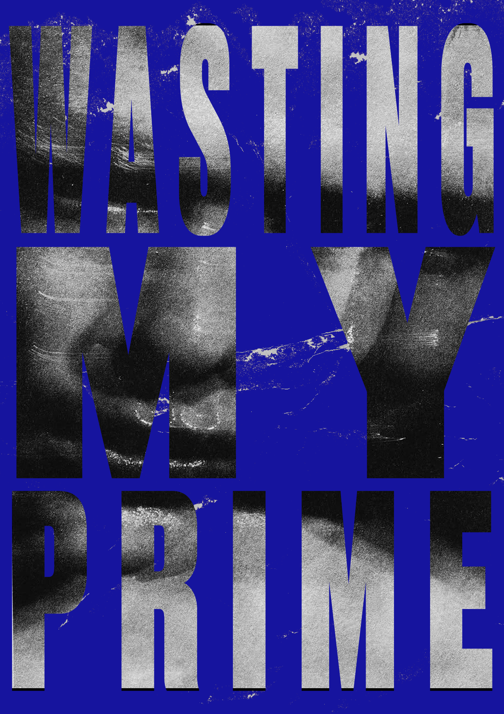
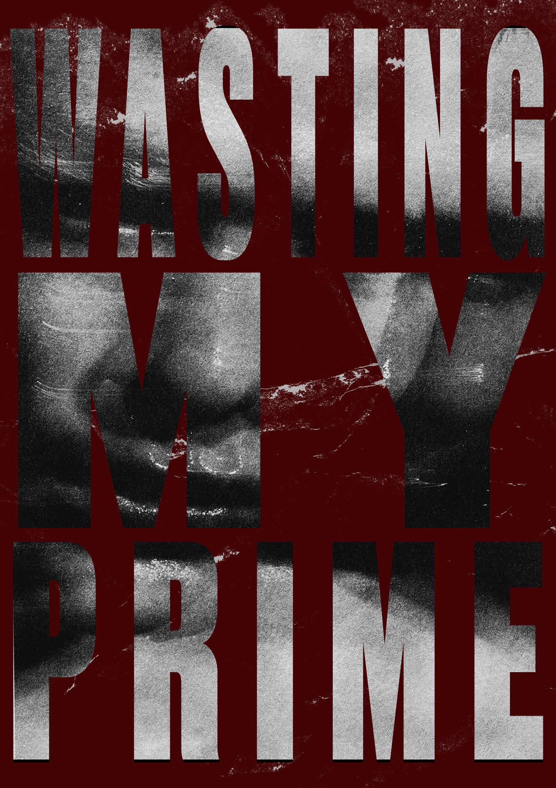
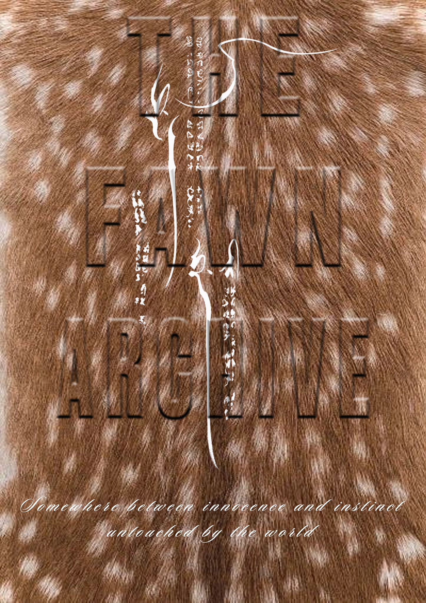
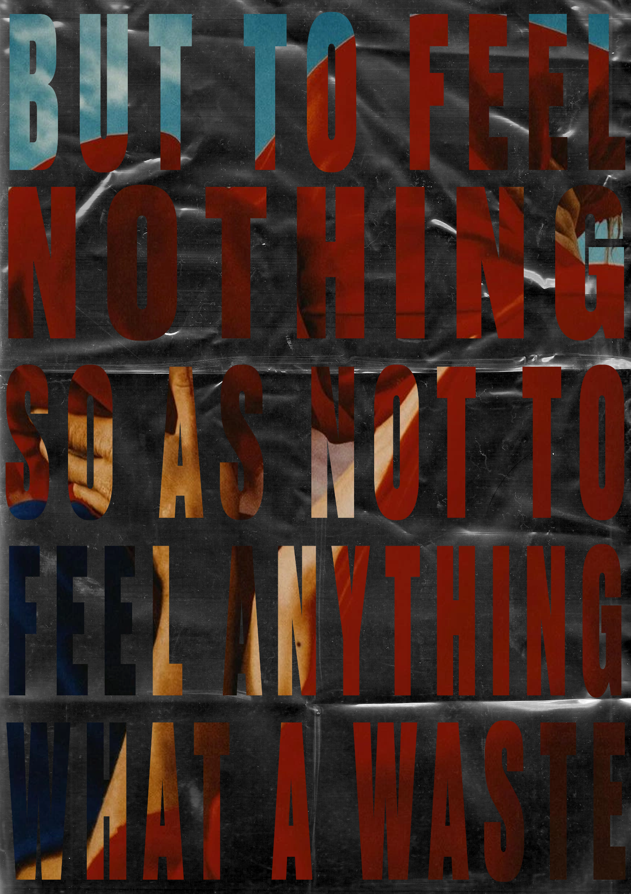

ARMAT & LIT CAFÉ
I designed these posters for two music events. The ARMAT poster was created for a club event featuring Hovani, and the Lit Café poster for a DJ night. Both were published on the events’ Instagram pages in 2026.
06 / GRAPHIC DESIGN
A selection of event posters and personal explorations in music, typography and texture.
I designed these posters for two music events. The ARMAT poster was created for a club event featuring Hovani, and the Lit Café poster for a DJ night. Both were published on the events’ Instagram pages in 2026.


Personal poster designs inspired by Deftones and Placebo. I explored contrasting moods through imagery, color and typography.


Two color versions of the same composition, using large letterforms, photographic detail and distressed texture.


Further personal explorations in layering text over imagery, using texture and contrast to shape the mood of each poster.

